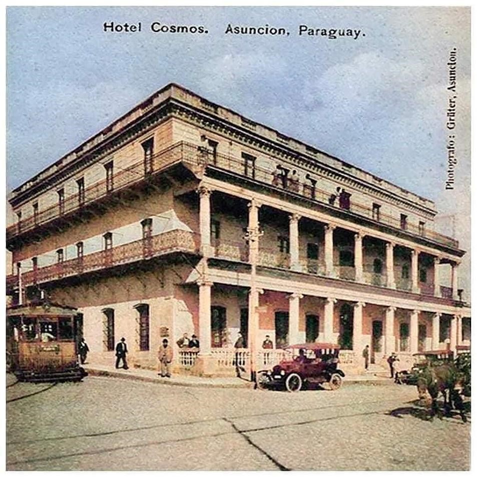

Historical Aspects
Venancio López Carrillo, was born in the city of Asunción in 1828, son of Carlos Antonio López and Juana Carrillo, brother of Francisco Solano López. He was Minister of War and Navy, and military commander of Asunción. He was at the side of his brother, the Marshal, until, in 1868, they fell on him for an alleged conspiracy against President López. In the first instance, he was forgiven Life, but they kept him imprisoned and incommunicado. In October 1869 he was accused again, but this time together with his mother, his sisters and Colonel Hilario Marcó, a new conspiracy to kill the Marshal. He was subjected to torture, and in the Picada de Chiriguelo, a few kilometers from reaching Cerro Corá, he was found dead in February 1870.
This beautiful mansion built in 1858, with a project by the Italian architect Alejandro Ravizza, belonged to Venancio López, son of Don Carlos and younger brother of Francisco Solano. Don Carlos Antonio López, president of Paraguay until his death in 1862, had each son build palaces. Benigno, the youngest, had one in Palma and on May 14, which was also converted into a hotel in the post-war period (1864-1870), Francisco Solano had his, which is now the Government Palace, and Venancio López had this one. His daughter, Juana Inocencia, married to General Barrios, also had hers, although a little more modest than those of his brothers. The building under study, historically called Ex Palacete López Carrillo, is another of the many works of the architect Alessandro Ravizza, of Italian nationality, who arrived in Paraguay in 1854. He himself was one of the most renowned architects of the country at that time, whose works (Palacio de Gobierno, Palacio de Benigno López and others.) under the government of President Don Carlos Antonio López and Francisco Solano López, put Paraguay on the historical map of the world building culture of that time.
The building was built for the residence of Venancio López Carrillo, and around 1858 it was inaugurated. He himself, as a sailor, worked as Chief of Customs and traveled on Navy ships to monitor commercial movements, especially the Asunción, Buenos Aires (Argentina), Montevideo (Uruguay) route. He was also Minister of War and Navy and Military Commander of Asunción. In 1869, with the entry of Brazilian troops to Asunción, this construction became the Navy Hospital. At the end of the War against the Triple Alliance (1864-1870), after the withdrawal from Brazil, the building returned to the hands of the sons of Venancio López, who sold it. Subsequently, it became the property of the private sector, first, during the rest of the 19th century, it was the “Hotel Argentino”, then it was the Cosmos hotel and in the middle of the 20th century, the Colonial Hotel and finally the Asunción Palace Hotel to date.
In the 1940s, Camihort's widow sold the property to Mr. Eduardo Yubero, who was the Administrator of the Asunción Palace Hotel. Later passed into the hands of her daughter, Mrs. Malia Yubero de Sánchez. Alicia Sánchez, Yubero's granddaughter, recounts that when the house was inaugurated, the music that was played was called Polka for the first time. One night in January 1925, a new musical genre created by Maestro José Asunción Flores premiered at the hotel. At the Hotel Cosmos, I was Dr. Eligio Ayala, president of Paraguay, with a group of friends, when the Police Band Orchestra began the execution of Jejuí. the enthusiastic public he fell silent and applauded the remarkable creation. Who is the author? President Eligio Ayala asked. They replied: “he is one of the police musicians, a little soldier named José A. Flores.” Some prominent European musicians, living in the country, shared the stage, performing the Jejuí score with the Band. They were violinist Alfred Kamprad, pianist Alfred Brand, and Erik Piezunka, playing cello. Doctor Ayala asked for an encore. That day the true Paraguayan music was born, the one that gives us identity: La Guarania.
Formal Description From the point of view of applied technology: A new cultural pattern is gradually imposed, leaving behind the colonial tradition. A building pattern that is characterized as a transition towards Classicism and Eclecticism. Materials are introduced such as iron used in lintels, small vaults among others and some imported materials (marble).
Typology L-shaped architectural plan Description. The mansion-type building is located on a corner lot, between boundaries and on an elevation with respect to both vehicular arteries. The main access is located on Avenida Colón, and is accessed through a few steps, enhancing the building itself. The neoclassical style becomes a determined imitation of everything European, both in the technical construction aspect and in the decorative aspect, which is what can be seen on the main façade on Cristóbal Avenue. Colón (pillars of the Ionic order on the ground floor of the building and the Corinthian order on the high). For its construction, materials from our country have been used, such as: Rough stone foundations for foundations brought from Emboscada and Altos, masonry plastered with ceramic bricks from public olerías. For the openings (doors and windows) the good woods of our country were used, the wooden doors were carved by local craftsmen and the glazed windows are in good condition. Wrought iron is observed for the Catalan vaults. Among the imported materials marble is cited, used in thresholds of the main access. The staircase that leads to the upper floors, has wrought iron railings and worked with a very nice decoration, the floors are made of calcareous mosaics. Observations: The building marks an era in history during the presidential period of Don Carlos Antonio López. This mansion is perhaps one of the works of Arch. Ravizza, which, due to its strategic location, the use of its exterior galleries in two bodies (Ionian and Corinthian) that gave it a classicist character that, however, it took up the tradition of external corridors of colonial architecture. For new uses, the building was completely remodeled inside. In 2007, it was the subject of some Interventions such as: Modification of the opening in the main façade, expansion with an upper floor (third floor), closures of some openings, and others.
Bibliography Gutierrez Ramón Arq.-Urban and Architectural Evolution of Paraguay 1537-1911. Comuneros Editions Year 1983 Asunción Paraguay. (Consulted page 223). www.bibliotecanacional.gov.py www.paraguay.com>specials>a review of architecture in 200 years of history SANCHEZ QUELL, HIPOLITO / RUBIANI, JORGE Arch. "Assumption of Memories". Editorial Artemis. Assumption, 1984. National Secretary of Culture. General Directorate of Cultural Heritage- Directorate of Heritage Registry- Cultural Heritage Registry Department. Municipality of Asunción-General Directorate of Urban Development-Directorate of Planning U.-Department of Cultural Heritage. Links: http://www.jma.gov.py/wp-content/uploads/2018/12/27-Asunci%C3%B3n-Palace-Hotel..pdf https://asuncionhotelpalace.com/english.html Linking with other tabs National Identity Card for Immovable Cultural Goods-Heritage Registry Directorate-General Directorate for Cultural Heritage of the National Secretariat of Culture (SNC). Building Inventory Sheet- Year 1990- Historical Center Office - Municipality of Assumption.
Work team Cataloger Arch. Mirtha Ibarra C. Collaborators Arch. Msc. Clarisse Insfrán Echauri. Other Collaborators Func. Gustavo Barrios Func. Humberto Battioni Component entity Heritage Registry Directorate Data collection date 07/01/2018 Operator Clarisse Insfrán Registration date 09/20/2019